Arcade passport
Play an app to collect its stamp.
Java Swing and AWT programs recovered from old jars, compiled to JavaScript with TeaVM. Each runs on a small AWT/Swing layer that draws the original windows and widgets in the page. One is already running below: pick any other to swap it in.
Play an app to collect its stamp.
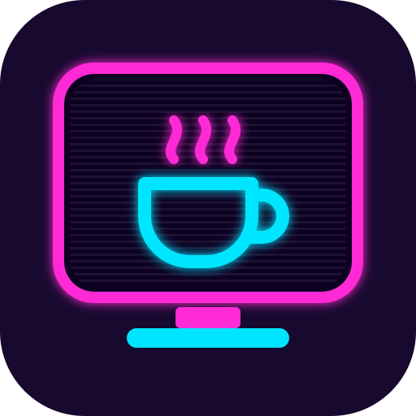
Install it as an app, and save all 16 to play with no connection.
To install, use Install app or Add to Home Screen in your browser's menu.
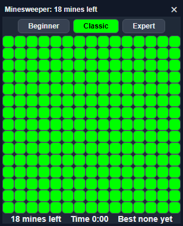
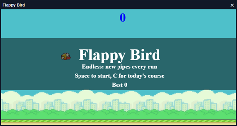
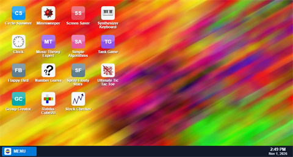
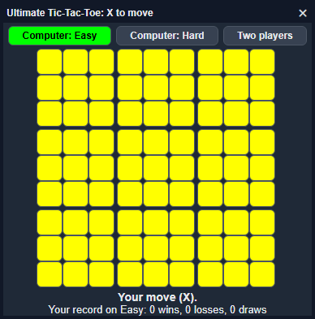
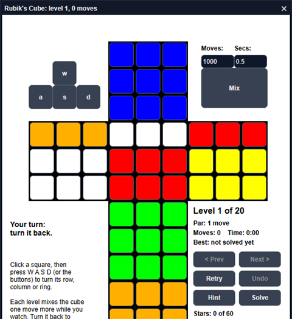
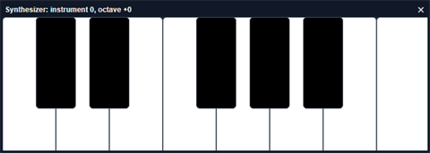
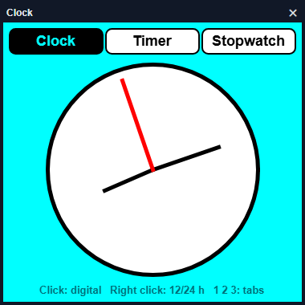
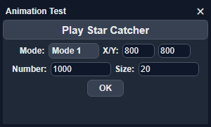
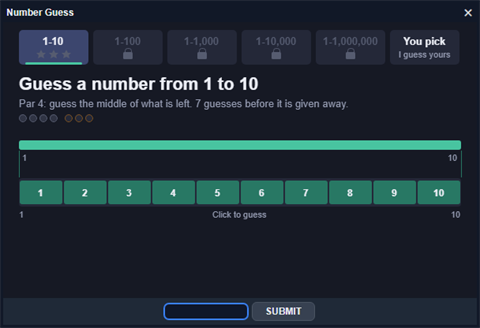
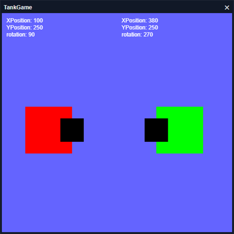
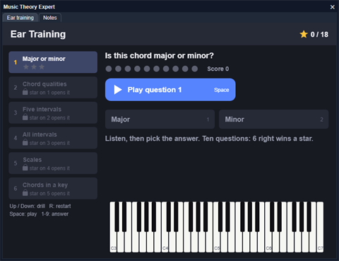
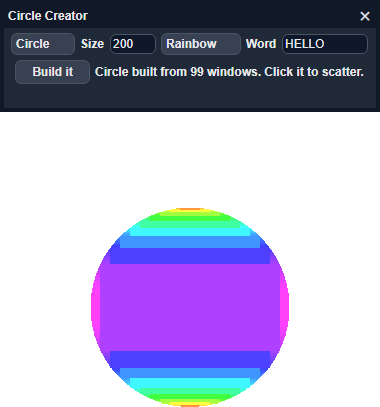
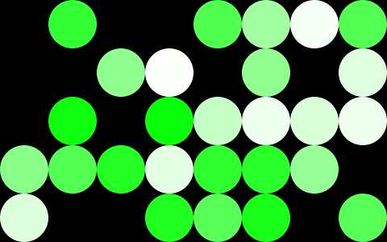
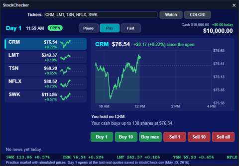
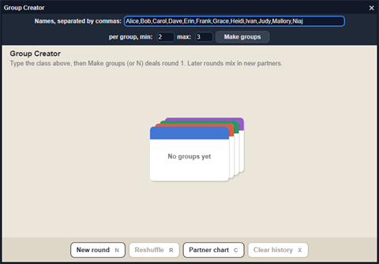
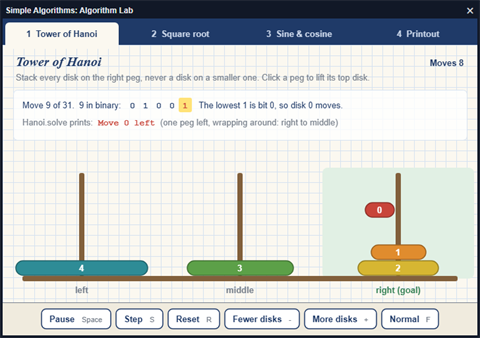